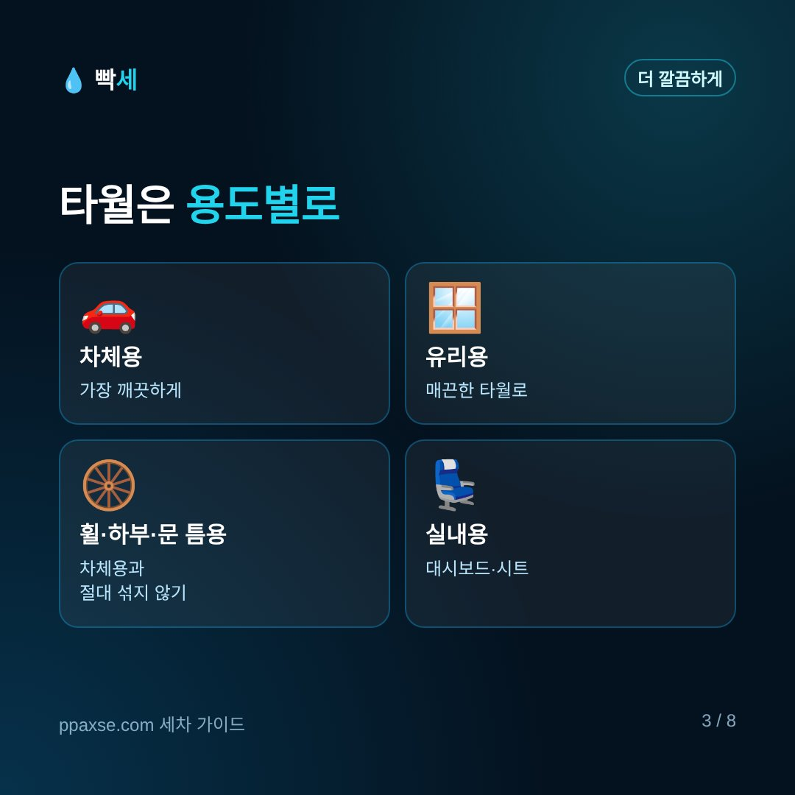
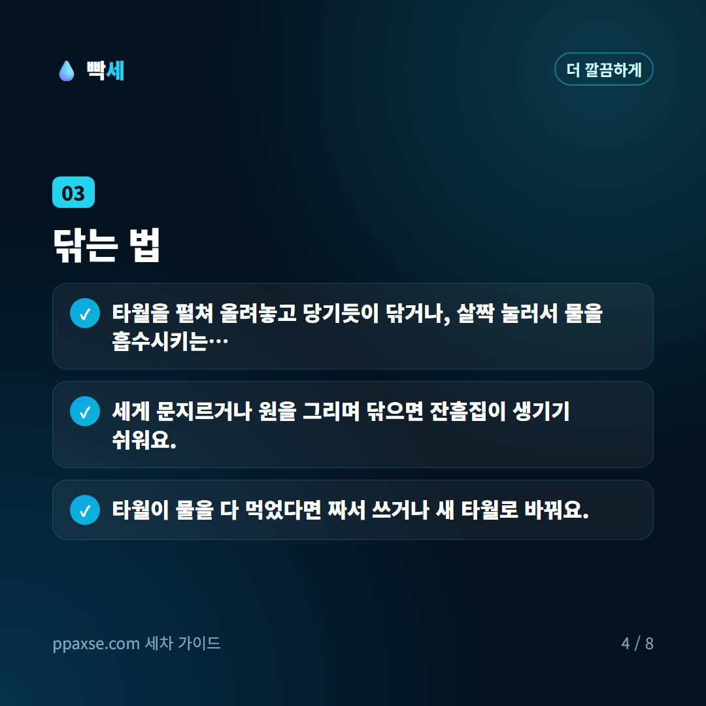
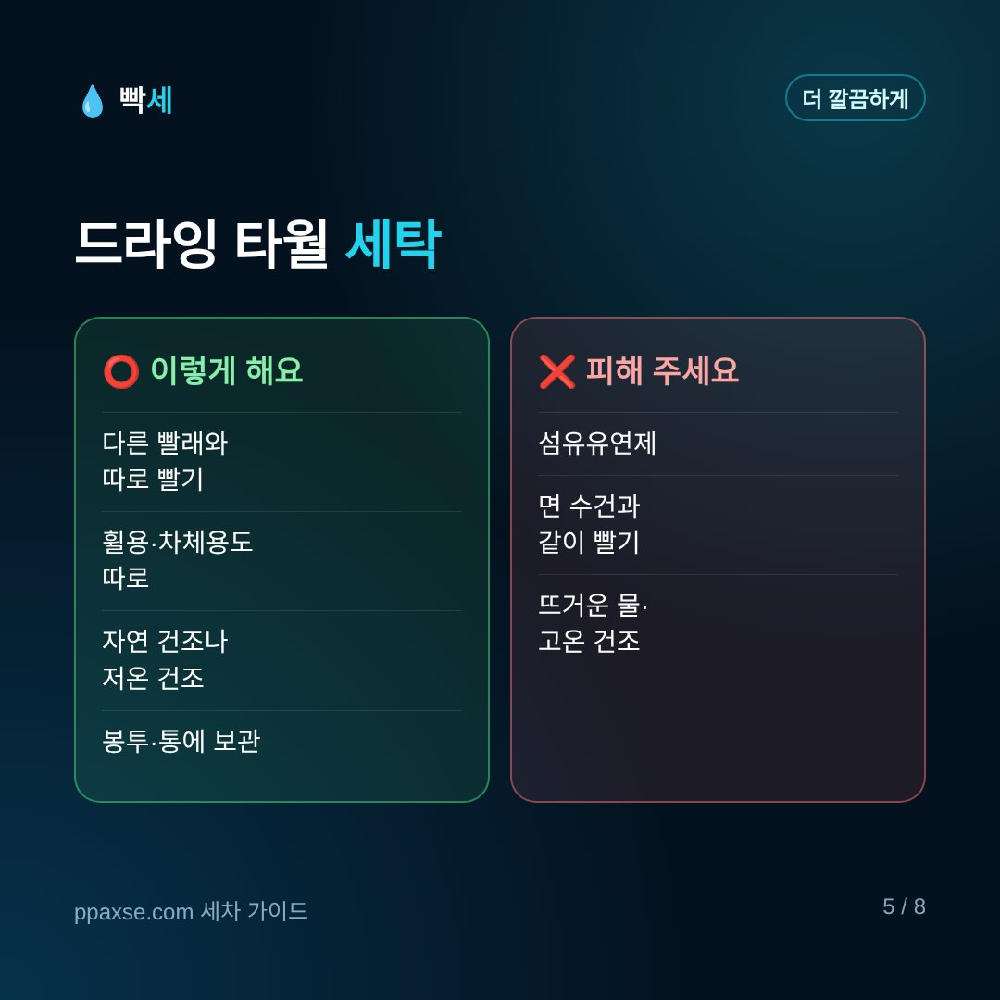

드라잉 타월 고르는 법과 세탁법
2026-11-23 · 빡세 세차 가이드
셀프세차에서 가장 먼저 챙기라고 하는 게 드라잉 타월이에요. 물기를 얼마나 잘, 부드럽게 닦느냐에 따라 물자국과 잔흠집이 꽤 달라지거든요. 비싼 타월이 꼭 정답은 아니고, 용도에 맞게 고르고 잘 관리하는 것이 더 중요해요.
고를 때 이런 걸 봐요
- 크기 — 큰 타월은 한 번에 넓은 면을 닦을 수 있어 빠르고, 작은 타월은 다루기 편해요. 큰 것 하나와 작은 것 몇 장을 같이 쓰는 분들이 많아요.
- 두께와 결 — 극세사 타월은 짜임에 따라 결이 길고 폭신한 것, 납작하고 매끈한 것 등이 있어요. 폭신한 건 물을 많이 머금고, 매끈한 건 가볍고 잘 마르는 편이에요. 직접 써 보고 손에 맞는 걸 고르는 분들이 많아요.
- 가장자리 — 박음질 테두리가 딱딱하면 도장면에 닿을 때 신경 쓰여요. 테두리가 부드럽거나 없는 제품을 찾는 분들도 있어요.
용도별로 나눠 쓰세요

- 차체용 — 가장 깨끗하게 관리해요.
- 유리용 — 얼룩이 덜 남는 매끈한 타월을 따로 쓰는 분들이 많아요.
- 휠·하부·문 틈용 — 브레이크 분진과 기름때가 묻으니 차체용과 절대 섞지 않아요.
- 실내용 — 대시보드, 시트 닦는 용도로 따로 둬요.
색깔을 다르게 사면 헷갈리지 않아요.
💡 바닥에 떨어뜨린 타월은 그날 차체에 쓰지 마세요. 모래가 묻어 있으면 닦는 동안 흠집을 낼 수 있어요. 여분을 챙겨 가면 마음이 편해요.
닦는 법

- 타월을 펼쳐 올려놓고 당기듯이 닦거나, 살짝 눌러서 물을 흡수시키는 분들이 많아요.
- 세게 문지르거나 원을 그리며 닦으면 잔흠집이 생기기 쉬워요.
- 타월이 물을 다 먹었다면 짜서 쓰거나 새 타월로 바꿔요. 젖은 타월로 계속 닦으면 물기가 남아 자국이 돼요. 물자국 이야기는 세차 후 물자국이 생기는 이유에 정리했어요.
오래 쓰는 세탁 요령

- 섬유유연제는 쓰지 않아요. 섬유를 코팅해서 물을 잘 못 빨아들이게 된다고 해요.
- 다른 빨래와 따로 빨아요. 특히 면 수건과 같이 빨면 보풀이 극세사에 박혀요.
- 휠용과 차체용도 따로 빨아요.
- 뜨거운 물이나 고온 건조는 섬유를 상하게 할 수 있어요. 자연 건조나 저온 건조를 하는 분들이 많아요. 세탁 표시가 있다면 그걸 따라 주세요.
- 빤 뒤에는 먼지가 묻지 않게 봉투나 통에 넣어 보관해요.
드라잉존이 넉넉한 세차장
타월이 아무리 좋아도 마무리할 자리가 좁고 햇빛이 강하면 힘들어요. 드라잉존이 넓은지, 그늘인지는 다녀온 사람의 정보가 가장 정확해요. 빡세 지도에서 찾아보고, 다녀오면 한마디로 남겨 주세요. 지역별 목록은 지역별 세차장 모음에서 볼 수 있어요.
🗺️ 우리 동네 세차장, 지도에서 한눈에 보세요
☀️ 오늘 세차하기 좋은 날일까요?
날씨 보고 세차할 날 고르기10일 달력 보기 ›
셀프세차·노터치·손세차를 종류별로 골라 보고, 폼건·온수·하부세차 같은 시설 정보도 확인할 수 있어요.
🗺️ 세차장 지도 열기✏️ 자주 가는 세차장에 한마디 남기기🎁 한마디를 남기면 가입 없이도 매주 기프티콘 추첨에 응모돼요.